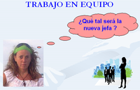

Los equipos de trabajo y la gestión del conflicto.
Caso práctico

Eva presta asistencia técnica telefónica en una empresa que vende programas y componentes informáticos. Su tarea consiste en resolver telefónicamente los problemas técnicos y de uso que les puedan surgir a aquellas empresas y particulares que adquieran estos productos.
Debido a la creciente demanda, la empresa se ha planteado aumentar la plantilla para poder prestar una adecuada asistencia técnica a todos sus clientes. La dirección de la empresa ha nombrado a Rosa, un miembro del Departamento de Recursos Humanos, encargada de crear un departamento nuevo de atención al cliente en el que se incluya la asistencia técnica que ya se está prestando vía telefónica, así como asistencia a través del correo electrónico y otros servicios. Este nuevo departamento va a estar integrado por personal de la empresa y por trabajadores contratados para ello. La dirección de la empresa ha dejado a Rosa mucho margen de libertad para que organice este departamento, pero lo que tanto Rosa como la empresa quieren es un departamento que cuente con un personal en actitud positiva, con un gran sentido de la responsabilidad y con formación suficiente para poder comunicar a los clientes todos los intangibles que lleva consigo la palabra servicio o producto. No sólo la resolución técnica de sus posibles problemas. La empresa es consciente de que la calidad en la atención ha pasado pronto a ser un imperativo del siglo XXI y por ello las compañías españolas no pueden permitirse el lujo de sufrir retrasos también en este aspecto.
El coste de mantenimiento de un cliente es notablemente inferior al coste de conseguir uno nuevo y a su vez sensiblemente menor al de recuperación de un cliente perdido. Por ello la empresa quiere crear un departamento capaz de potenciar una cultura de atención al cliente que le permita fidelizarlos.
La competencia ha hecho que los clientes sean mucho más exigentes. La diferenciación fundamental de las empresas competitivas es fidelizar y prestar buena atención a los clientes. Un cliente satisfecho es aquel cuyas expectativas de producto se ven superadas por el mismo producto. Por lo que Rosa está decidida a formar un buen equipo que de ese servicio y consiga no sólo dar asistencia técnica a los clientes si no fidelizarlos.
Eva está algo inquieta porque va a formar parte de un departamento que estará integrado por 17 personas, parte de las cuales todavía no conoce. No tiene claro si va a ampliarse el horario de trabajo en este departamento, si se harán turnos, o si va a haber más cambios organizacionales, aunque todo apunta en esa dirección.
Rosa ha conocido hoy a los trabajadores que van a integrar este nuevo departamento, aunque no les adelanta mucha información les dice que va a formar con ellos un equipo de trabajo, que espera que esté cohesionado y unido y sean realmente un equipo.
Eva llama a Hugo, del que se ha hecho amigo en el ciclo
Eva llama a Hugo, de la que se ha hecho muy amiga desde que han empezado el Ciclo, e incluso más de una vez han quedado después del trabajo a tomar algo:
- Hola, Hugo, ¿qué tal, cómo lo llevas? ¿Ya has empezado a echarle un ojo al módulo de FOL?
- Si, ahora ando con la Unidad de Trabajo 7, la de los equipos de trabajo, está bien, es interesante
- ¿Equipos de trabajo? Mira, no me hables de ese tema, que estoy negra. Tenemos una nueva encargada, una niñata de estas que acaba de salir de la universidad y que es sobrina del dueño de la voy a formar parte de un departamento nuevo de atención al cliente y han puesto como directora del departamento a una persona que está obsesionada con que tenemos que ser un gran equipo y trabajar unidos.
- Bueno, ¿y por qué te preocupa tanto? A mí lo de trabajar en equipo no me parece mala idea, se consiguen más cosas que de forma individual, es más enriquecedor.
- ¿Qué se consigue más y es más enriquecedor? ¡No estoy de acuerdo! Esto de trabajar en equipo ahora está muy de moda pero en el fondo a nadie nos gusta trabajar así. A todos nos gusta trabajar de forma individual, a mi que no me cuenten "milongas", hacerlo a nuestro ritmo y a nuestra forma, hacer lo que nos apetezca en cada momento, ...pero ahora voy a tener que estar discutiendo con mis compañeros y compañeras qué hacer y qué no hacer, cómo y cuándo,... ¡Menuda se va a montar! Además, si las cosas están bien como están, ¿para que cambiar?
- No seas tan negativa, al principio hasta que os adaptéis unos a otros costará un poco, pero en el momento que tengáis marcadas las normas y los límites trabajarás mucho mejor que ahora, ya verás La interacción siempre es buena. Mira, piensa lo siguiente: si tu me das a mi un euro y yo a ti otro, ¿qué tenemos? 1 euro cada uno. Pero si tú me das una idea y yo a ti otra entonces, ¿qué tenemos? Dos ideas. ¿Ves como es mejor?
- En algunas cosas llevas razón, pero yo sigo diciendo que es mejor trabajar individualmente, no sé... ¡Oye, me estás haciendo cambiar de opinión!
-¡Y mucho más que lo harás tras estudiar la unidad 7 de FOL!, anda ve a leerla.
¿Crees que Eva lleva razón, que es mejor trabajar individualmente que en grupo? ¿Qué método de trabajo es más ventajoso?


{kind=link}
{kind=link}
{kind=link}
{kind=link}
{kind=link}
{kind=link}
{kind=link}
{kind=link}
{kind=link}
{kind=link}
{kind=link}
{kind=link}
{kind=link}
{kind=link}